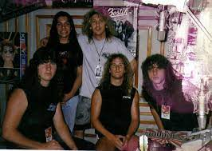

Death foi uma banda dos Estados Unidos, originária de Orlando, Flórida, fundada em 1983 e considerada uma das principais desenvolvedoras e difusoras do death metal. Seu vocalista e guitarrista, Chuck Schuldiner, foi um dos primeiros a usar vocais guturais ativamente, e sua técnica de guitarra é citada por muitos músicos como inspiração. A banda teve seu fim em 1998, após Schuldiner iniciar um novo projeto de heavy metal chamado Control Denied.
Considerada uma das bandas mais influentes do death metal, a história do Death teve início quando o guitarrista e vocalista Chuck Schuldiner e o guitarrista Rick Rozz se juntaram ao baterista e vocalista Barney "Kam" Lee para formarem primeiramente o Mantas. Inspirados principalmente por bandas como Venom e Slayer, o trio começou a forjar as suas primeiras composições, enviando-as a várias "tape-traders" internacionais. Numa destas sessões foi produzida uma demo intitulada Death by Metal de 1984, composta por cinco canções, que, apesar do seu registro deveras bruto, alçou a banda como uma das mais promissoras da América dentro do death metal, cuja banda em evidência era o Possessed, proveniente de San Francisco.
Embora tenham gozado de um efêmero reconhecimento, os integrantes do Mantas presumiram que não eram recebidos com o devido crédito, como revelou Chuck: "Muitas pessoas nos subestimaram, nós recebemos um monte de m**** da cena de bandas locais; todas as bandas dos arredores (Orlando) acharam que nós eramos pura m****. Nós eramos barulhentos naquela época, mas estávamos colocando pra fora death metal bruto, era muito para a compreensão das pessoas." ” Nesse ínterim, o Mantas acabou por se dissolver em 1984. Posteriormente, Chuck Schuldiner intentando perfazer canções mais pesadas e rápidas, anunciou os seus planos para formar uma banda denominada Death. Reconciliado com Rozz e Lee, Chuck iniciou a elaboração de novas demos, dentre as quais se originária a legendária "Reign of Terror", a qual, definitivamente, impingiu o Death como referência no death metal mundial, denotando-os, assim, o caráter do seu real potencial como banda. Alcançava o Death, dessa forma, o "seu lugar no mapa". Após várias breves aparições ao vivo (comumente em bares) a banda concentrou-se em erigir seu caminho ao primeiro petardo.
Lançado em julho de 1987, Scream Bloody Gores, teve grande projeção entre a crítica especializada. Esse álbum é considerado um marco dentro do estilo e influenciou grande parte das bandas que aderiram ao gênero anos mais tarde. Músicas como "Zombie Ritual" e "Baptized In Blood" são até hoje muito reverenciadas pelos fãs. No ano seguinte Terry Butler (baixo) e Bill Andrews (bateria) entram no grupo e lançam Leprosy, outro álbum considerado essencial para fãs do gênero. A evolução de Schuldiner como músico e compositor era notável, o som do Death ficava cada vez mais técnico e veloz, assim como a produção também havia melhorado bastante, se comparado ao álbum anterior. Destacam-se faixas como "Pull The Plug", Forgotten Past" e a faixa título. Bastante conhecidos no meio Underground, o Death inicia a turnê de divulgação, passando pela Europa, onde tiveram alguns problemas referentes a organização, e na América do Norte (No México, a banda contou com o reforço do guitarrista Paul Masvidal), consagrando-os como uma das melhores bandas de Metal ao vivo da época.
logo após, Chuck contratou o virtuoso guitarrista James Murphy, que junto a banda, gravaria o álbum Spiritual Healing, lançado em fevereiro de 1990, produzido por Scott Burns. Chuck Schuldiner cada vez mais se mostrava um grande compositor, e a técnica do Death crescia gradualmente a cada lançamento. Chuck também mudou a temática das letras, dessa vez apostando mais em críticas sociais. Em 1990, às vésperas de uma turnê europeia, Schuldiner decidiu não viajar, alegando que no último minuto, ele sentiu que a turnê não foi devidamente organizada. Andrews e Butler continuaram com a turnê pela Europa como "Death" para cumprir as obrigações contratuais da banda, e recrutaram os roadies Walter Trachsler (guitarra) e Louie Carrisalez (vocal) para substituir Schuldiner, para grande espanto deste. Schuldiner tomou medidas legais e Butler e Andrews foram demitidos da banda. Desde então, Chuck havia decidido que não trabalharia mais com músicos fixos no Death, apenas músicos contratados.
Em 1997, no entanto, o Death retorna mais uma vez, para lançar o último álbum da carreira, The Sound Of Perseverance, contando com Richard Christy (bateria), Shannon Hamm (guitarra) e Scott Clendenin (contra-baixo). Lançado pela Nuclear Blast em 1998, The Sound Of Perseverance mostrava um Death ainda mais técnico e progressivo (alguns materiais foram re-aproveitados do Control Denied), e com Chuck cantando de uma forma diferente - ao invés dos tradicionais guturais, Chuck optaria por um vocal mais rasgado e agudo. Destacam-se composições como "Scavenger of Human Sorrow", "Spirit Crusher", "A Moment of Clarity", e o cover de "Painkiller", do Judas Priest. A turnê de divulgação seguiu com o mesmo Line-up que gravou o álbum. Depois do álbum e duas turnês de suporte, Schuldiner colocou o Death de lado para se dedicar ao Control Denied com Christy e Hamm. Clendenin foi trocado por Steve DiGiorgio, e o vocalista Tim Aymar. Embora o line-up e estilo das músicas do Control Denied fossem em grande parte semelhantes ao do Death, Schuldiner criou o Control Denied, porque ele estava descontente com os vocais menos agressivos para o Death. No entanto, em vez de trair o que a banda Death significava e como soava para os fãs, ele optou por criar uma nova banda: "Para mim, é apenas uma questão de evolução, fazendo do jeito certo, ou não", afirmou. Quando Schuldiner terminou de gravar o álbum de estréia do Control Denied, ele foi diagnosticado com câncer no cérebro, forçando a banda a cancelar os planos para uma turnê pelos EUA e Canadá. Após um pesado tratamento, a condição de Schuldiner melhorou, mas o tumor o deixou em um estado muito vulnerável e enfraquecido. Logo após, contraiu pneumonia e foi internado. Em 13 de dezembro de 2001, Chuck recebeu alta e voltou para casa, onde, uma hora depois, veio a falecer, dando fim de vez as atividades da banda.
